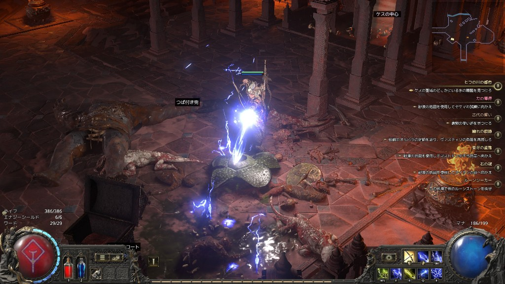
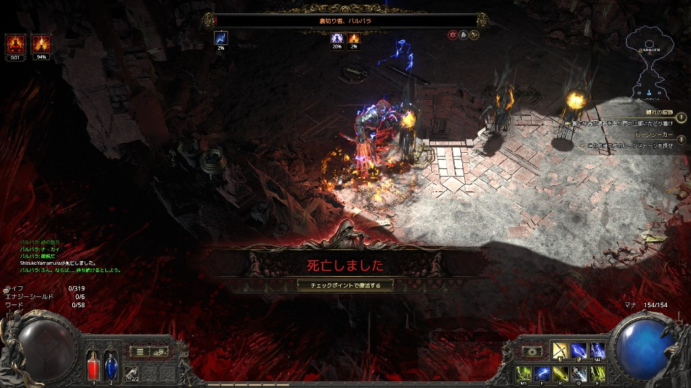
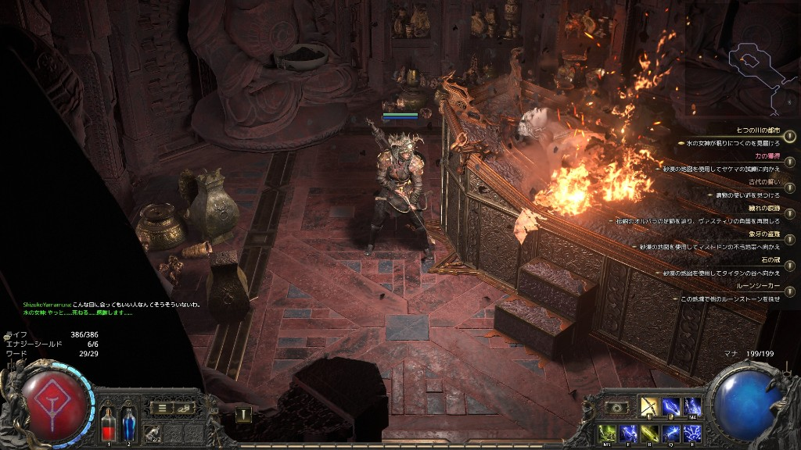
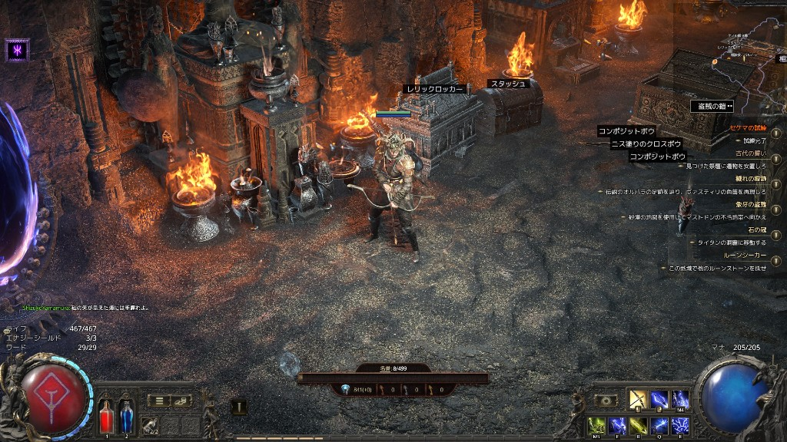

POE1が合わなかった私がPath of Exile 2に溶けた話
2026年6月23日 | PCゲーム / レビュー / ハクスラ
正直に言う。前作『Path of Exile』は私には合わなかった。画面が激しすぎて何が起きているかわからない。スキルツリーが宇宙みたいに広すぎて開いた瞬間に閉じた。「ハクスラの最高峰」と言われるたびに引け目を感じていた。そんな私が今、『Path of Exile 2』の沼にずっぽりはまっている。何が変わったのか、その理由をプレイ体験とともに書き残しておく。
POE1との決別——「速さ」についていけなかった
前作のPoE1がどんなゲームかというと、一言で言えば「画面全体を瞬殺する爽快系ハクスラ」だ。スキルを使えば画面外まで続く敵の群れが一瞬で蒸発する。レアアイテムが雨のように降り注ぐ。それを楽しめる人には最高の体験だろう。ただ私には、その「速さ」が肌に合わなかった。何をしているのかよくわからないまま死に、リビルドをして、また同じような画面を流し見て……という作業感が拭えなかったのだ。
しかしPoE2のトレーラーを見たとき、明らかに雰囲気が違った。ゆっくりとした、重みのある戦闘。ボスの巨大な予備動作。ローリングで間一髪かわす緊張感。「これは違うゲームだ」と直感して、早期アクセスに飛び込んだ。
「見下ろし型エルデンリング」という表現が刺さった
PoE2の戦闘を語るうえで、よく引用される言葉がある。「見下ろし型エルデンリング」だ。誰が言い出したかは知らないが、これ以上的確な表現はないと思う。
PoE2では敵は予備動作（テレグラフ）を見せてから攻撃してくる。プレイヤーはその予兆を読んでローリングで回避し、隙を見て反撃する。ソウルシリーズでおなじみのあのリズムが、見下ろし視点のARPGに乗っかっている。スタミナゲージがないので回避は自由だが、MPがなければスキルは撃てない。このバランスが絶妙で、「アクションの楽しさ」と「リソース管理の緊張感」が両立している。

上のスクリーンショットは序盤のエリア「ケスの中心」での戦闘シーン。雷撃スキルが敵を貫き、エフェクトが走る。前作のような「画面全体が爆散する」感覚ではなく、一撃一撃に手触りとウェイトがある。キャラクターの動きを自分でコントロールしている感が常にある。この感覚がたまらない。
ボスが「壁」であることの喜び
PoE2のボスは強い。本当に強い。序盤のボスでも、油断すれば普通に死ぬ。そして私は実際に何度も死んだ。

この「裏切り者、バルバラ」との戦いでは、相手のHPが94%残っている状態で私が先に沈んだ。屈辱的か? いや、むしろ悔しくてすぐリトライした。死因は何だったか。床の範囲攻撃を見てから動こうとしたが、踏み込んでいた分だけ避けきれなかった。次は最初から距離をとって動き回ることにした。そして3回目のトライで倒した。
この体験はソウルライクそのものだ。「理不尽ではなく、自分のミスで死んでいる」という納得感。だからこそ倒したときのカタルシスが格別になる。前作で感じた「なぜ死んだかわからない」という理不尽さがPoE2ではほぼない。ボスの予備動作は必ずある。読んで、避ける。シンプルだが奥が深い。
世界観の作り込みが圧倒的
戦闘だけではなくフィールドの演出もすごい。PoE2の世界は暗く、重く、美しい。ゴシックホラーのような廃墟、炎が燃え盛る神殿、血に染まったカタコンベ……どこを歩いていても「物語の中にいる」感覚が途切れない。

探索中もNPCとの会話が随所に挟まれ、世界の背景が少しずつ明かされていく。前作は「ストーリーは飾り、本番はエンドゲーム」という空気感が強かったが、PoE2はキャンペーン自体を丁寧に楽しむゲームになっている。「七つの川の都市」というエリアは特に、廃れた文明の残滓と炎の演出が重なって、ただ歩いているだけで没入感が高い。
グラフィックスの質も申し分ない。キャラクターの装備が細かく描き込まれていて、鎧や兜の金属の質感、布の揺れ方がリアルだ。ライティングもよく計算されていて、暗闇の中でスキルのエフェクトが光ると思わず見入ってしまう。
ビルドの深みと「終わらない育成」
戦闘に慣れてくると、次に沼になるのがビルドだ。PoE2には1,500以上のノードを持つパッシブスキルツリーが存在する。最初に開いたときは「これは無理だ」と思ったが、実際には自分のクラスから周囲のノードを伸ばしていく形なので、少しずつ理解できてくる。

スタッシュ（倉庫）の整理は「もう一つのゲーム」と言っていい。フィールドで拾ったレアアイテムを仕分け、ビルドに合うモディファイアを選別し、スキルジェムをソケットして出力を最大化する。このアイテム管理と育成の繰り返しが中毒性の正体だ。
特にスキルジェムシステムが前作から大幅に刷新されている。前作はアイテムの穴にジェムを差し込む方式だったが、PoE2ではジェムに直接スキルを刻印し、サポートジェムをリンクさせる仕組みになった。これにより装備とスキルが切り離され、ビルドの試行錯誤がはるかにやりやすくなっている。初心者のうちは有志が公開しているビルドガイドを参考にするのが賢い。オリジナルを試すのは100時間プレイしてからでも遅くない。
POE2の現状と今後——早期アクセスだからこそ今が面白い
PoE2は2024年12月から早期アクセスが始まり、現在も継続的にアップデートが行われている。序盤の難易度や移動の快適さは初期リリース時から大きく改善されており、アップデートのたびにゲームが洗練されていく様子も楽しみの一つだ。
- 現在プレイできるのはストーリー全6章のうち前半3章
- クラスは現在6種類（各2つのアセンダンシークラスあり）
- エンドゲームのアトラスシステムも実装済みで、キャンペーン後も長く遊べる
- 正式版リリース後は基本プレイ無料になる予定
「全部完成してから遊ぶ」という選択肢もあるが、今のこの「作り上げていく過程に立ち会っている」感覚も悪くない。アップデートのたびに新しいリーグが始まり、またイチからキャラクターを育て直す。それを楽しいと思えるようになれば、もうPoE2の沼から抜け出せない。
POE1が合わなかった人こそPoE2を試してほしい
まとめると、Path of Exile 2が前作と決定的に違うのは、「速さ」ではなく「重さ」で勝負していることだ。一撃一撃の手触り、ボスを倒したときの達成感、アイテムとビルドの果てしない沼——そのすべてが噛み合って、今日もログインしてしまう。
こんな人には特におすすめしたい。
- 「爆速でザコを一掃するハクスラ」が肌に合わなかった人
- ソウルシリーズのボス戦の緊張感が好きな人
- ディアブロ系のトレハン・育成沼が好きな人
- POE1をプレイしてドロップアウトした経験がある人
POE1でドロップアウトした経験があるなら、その過去を一度忘れてPoE2のキャラクターを作ってみてほしい。あの感触は、もはや別ゲームだ。そして一度沼に落ちると、気づけば何時間も溶けている。それが、これを書いている今の私の状況でもある。